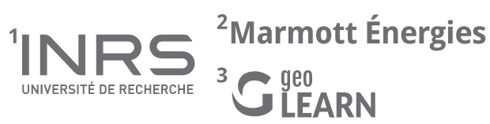

ThermCondMapa web-based application to map the thermal conductivity
Lorenzo Perozzi1,3, Jasmin Raymond1, Erwan Gloaguen1, Carl Bégin2

What are the limitations of residential geothermal projects ?
uncertainty on the thermal conductivity of materials
wrong evaluation of the length of the heat exchangers
How to estimate the length of the heat exchangers ?
How to better estimate the thermal conductivity ?
increase the thermal response test (TRT)
geostatistical simulations
ThermCondMap
Geostatistical simulations
Geostatistical simulations
Geostatistical simulations
Geostatistical simulations
Geostatistical simulations
Geostatistical simulations